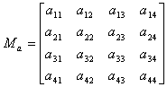

A matrix is made up of rows and columns as shown here:
Rows are numbered from the top to the bottom, and columns are numbered from the left to the right. A matrix that has m rows and n columns is called a matrix of m rows and n columns or an m x n matrix. An individual cell in a matrix is called an element or component and is referenced as the element in row m and column n or as the (m, n) component.
You will usually use 4 x 4 matrices in 3D graphics and 3 x 3 matrices in 2D graphics. These matrices are specified like this:

Nintendo® Confidential
Copyright © 1999
Nintendo of America Inc. All Rights Reserved
Nintendo and N64 are registered trademarks of Nintendo
Last Updated March, 1999